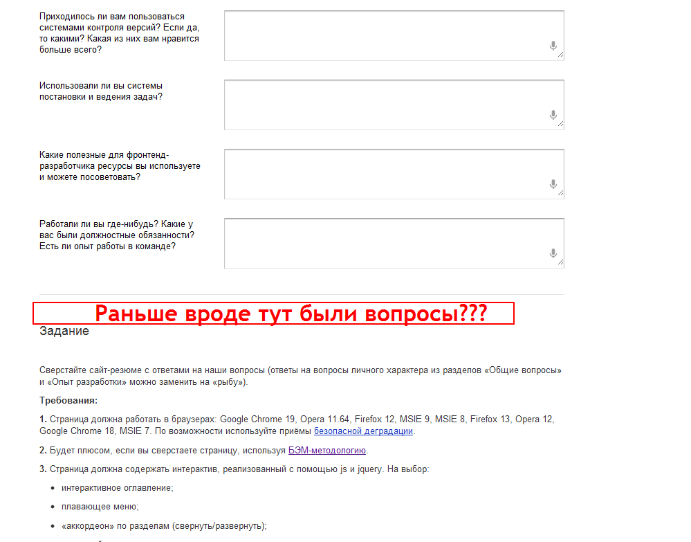

После прочтения информации о школе на Habrаhabr.ru, я зашел ознакомится с анкетой. Там было 4 части.
- Общие вопросы
- Опыт разработки
- Блок задач
- Задание (Сверстать страницу и разместить на github)
Но сейчас там нет 3-го блока с задачами. Ниже скрин с текущим отображением. Проверял в браузерах FireFox 14.0.1 и Google Chrome 21.0.1180.89 m.

Поэтому эту часть задания выполнить не могу.